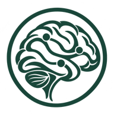
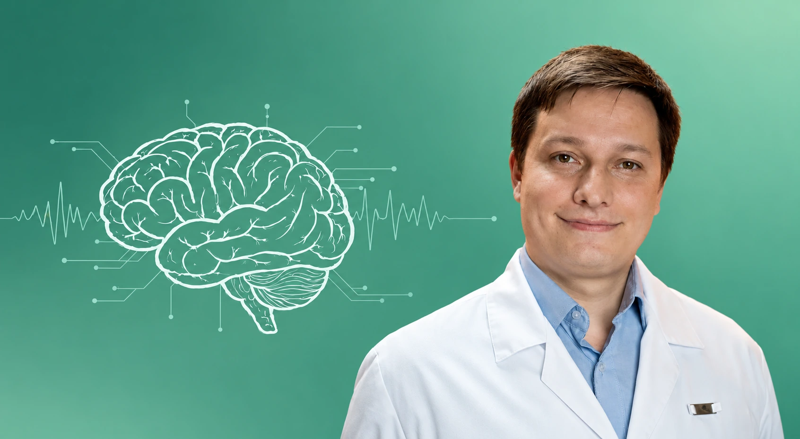
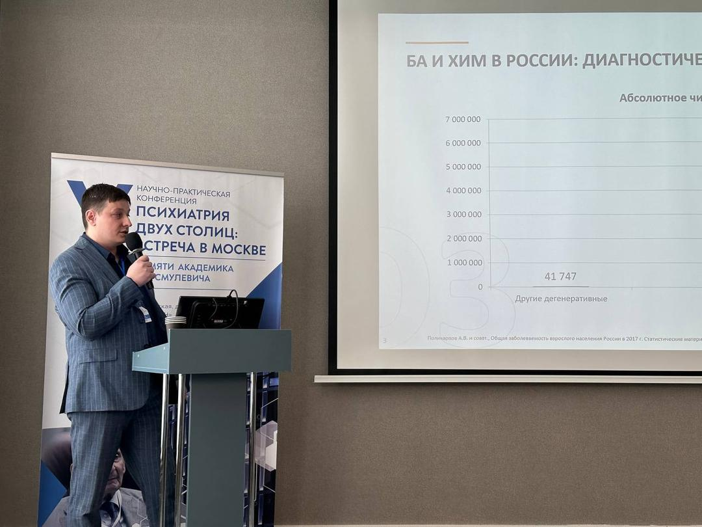

DOCMED
Очный приём
Записаться в DOCMEDТелефон для записи: +7 495 191-22-15

NeurologyConciliumЗапись на приёмПрактика и наука.
Внимание к человеку.

Врач-невролог, кандидат медицинских наук. Очные и онлайн-консультации.
Записаться на приёмКлиническая практика
Научная работа
Наставничество в DOCMED
Невролог, цефалголог, дементолог, алголог, отоневролог, паркинсонолог.
Старший научный сотрудник лаборатории сосудистых заболеваний головного мозга Института нейронаук и нейротехнологий РНИМУ им. Н. И. Пирогова. Доцент кафедры клинической медицины ММУ РЕАВИЗ.
Кандидат медицинских наук
Являюсь членом Российского межрегионального общества по изучению боли (РОИБ) Russian Association for the Study of Pain (RASP), Общества специалистов по нервно-мышечным болезням.
Основатель группы и канала NEUROLOGY CONCILIUM, автор блога NEUROLOGY CONCILIUM.
1-е место в рейтинге неврологов Москвы по мнению пациентов на 2 ноября 2020 г. АМБАССАДОР ПроДокторов 2021.
Принимаю участие в научно-практических конференциях, в организации школ-семинаров. Согласно приказу ДЗМ проводил семинары для терапевтов и врачей общей практики в рамках программы «Наставничества». Регулярно выступаю с докладами на круглых столах для врачей.
Невролог-наставник в клинике DOCMED
Занимаюсь развитием и популяризацией доказательной неврологии
В 2010 году я окончил с отличием Кабардино-Балкарский государственный университет, медицинский факультет.
С 2010 по 2012 гг — клиническая ординатура на базе Российского Национального исследовательского медицинского университета им. Н.И. Пирогова, кафедра неврологии, нейрохирургии и медицинской генетики.
В 2015 году — защита кандидатской диссертации на базе Российского Национального исследовательского медицинского университета им. Н.И. Пирогова, кафедра неврологии, нейрохирургии и медицинской генетики.
Прошел курсы повышения квалификации по интервенционным методам лечения в неврологии, нейропсихиатрическим аспектам неврологических заболеваний, лучевой диагностике для неврологов, головным болям и цереброваскулярным заболеваним; международную образовательную программу Европейской федерации головной боли; ботулинотерапии в неврологии; экспертизе временной нетрудоспособности.
Имею сертификаты по специальности «Неврология», Европейской школы по лечению головной боли, BKC-International House (уровень владения английским языком — advanced), сертификат GCP, позволяющий участвовать в международных клиничесских иследованиях (от 14.08.2018), сертификаты, дающие право работать с препаратами ботулотоксина «Релатокс» и «Диспорт».
С 2012 по 2016 года работал в ГБУЗ «ГП 166 ДЗМ» в должности врач-невролога.
С 2017 года по 2024 год — заведующий окружным отделением неврологии ЮАО г. Москвы на базе ГБУЗ «ГП 166 ДЗМ».
С 2017 года — врач-исследователь в РООИ «Здоровье человека»
Практическая деятельность в отделении неврологии способствовала как написанию кандидатской диссертации, тема которой посвящена социально значимому заболеванию — асимптомному инфаркту головного мозга, так и ряду печатных работ (21 печатных работ, из них 18 — в изданиях, рекомендованных перечнем ВАК Минобрнауки РФ), освещающих острые и хронические сосудистые заболевания головного мозга, когнитивные нарушения, демиелинизирующие заболевания.
Регулярно принимаю участие и готовлю выступления и доклады в региональных, федеральных и международных конференциях.
Читал лекции в различных ЦСО города Москвы в целях реализации мероприятий Государственной программы «Социальная поддержка жителей города Москвы», утвержденной постановлением Правительства Москвы от 06.09.2011 №420-ПП п.13, участвовал в информационно-образовательной программе по профилактике заболеваний людей пожилого возраста, поддержке здорового образа жизни среди инвалидов и пенсионеров «Школа здоровья», читаю лекции для населения в рамках проекта «Московское долголетие».
От головной боли и нарушений сна до туннельных невропатий.
Очно — в клинике, онлайн — на сервисе консультаций.
Что почитать и посмотреть пациенту.
Для всех, кто интересуется своим здоровьем.
Комплекс упражнений для вестибулярной реабилитации.
Статья о боли в поясничном отделе у взрослых.
Объединять неврологов.
Делиться знаниями.
Я основал группу, канал и блог NEUROLOGY CONCILIUM для развития и популяризации доказательной неврологии в России и СНГ.
В проекте читаются лекции, проходят семинары и разборы сложных клинических случаев.

Статьи, клинические рекомендации и систематические обзоры; вступление свободное.
Вступление через администрацию: собеседование и тестирование. Только для врачей-неврологов.
Неврология, адаптированная для терапевтов и врачей общей практики.
Курсы и наставничество: от теории к клинической практике.
Лекции для неврологов и для врачей всех терапевтических специальностей
Для неврологов — в клинике DOCMED.
или по телефону +7 910 526-00-10
1. EFFECTS OF CATECHOLAMINES ON TH17 CELLS IN MULTIPLE SCLEROSIS
Mel’nikov M.V., Belousova O.O., Zhetishev R.R., Boiko A.N., Pashchenkov M.V.
Neuroscience and Behavioral Physiology. 2018. Т. 48. № 3. С. 342-345.
2. THE ROLE OF BIOGENIC AMINES IN THE REGULATION OF INTERACTION BETWEEN THE IMMUNE AND NERVOUS SYSTEMS IN MULTIPLE SCLEROSIS
Boyko A., Melnikov M., Zhetishev R., Pashenkov M.
NeuroImmunoModulation. 2017. Т. 23. № 4. С. 217-223.
3. ВЛИЯНИЕ КАТЕХОЛАМИНОВ НА TH17-КЛЕТКИ ПРИ РАССЕЯННОМ СКЛЕРОЗЕ
Мельников М.В., Белоусова О.О., Жетишев Р.Р., Пащенков М.В., Бойко А.Н.
Журнал неврологии и психиатрии им. C.C. Корсакова. 2016. Т. 116. № 10-2. С. 16-20.
4. ПАТОМОРФОЛОГИЧЕСКИЕ ОСОБЕННОСТИ И ФАКТОРЫ РИСКА АСИМПТОМНОГО ИНФАРКТА ГОЛОВНОГО МОЗГА ПО ДАННЫМ СЕКЦИОННОГО ГОСПИТАЛЬНОГО ИССЛЕДОВАНИЯ
Жетишев Р.Р., Петренко Н.В., Камчатнов П.Р., Мельников М.В.
Журнал неврологии и психиатрии им. C.C. Корсакова. 2016. Т. 116. № 3-2. С. 18-22.
5. АСИМПТОМНЫЕ ИНФАРКТЫ ГОЛОВНОГО МОЗГА
Жетишев Р.Р.
автореферат дис. ... кандидата медицинских наук / Российский национальный исследовательский медицинский университет имени Н.И. Пирогова. Москва, 201506.
6. РАСПРОСТРАНЕННОСТЬ И ФАКТОРЫ РИСКА РАЗВИТИЯ АСИМПТОМНОГО ИНФАРКТА ГОЛОВНОГО МОЗГА
Жетишев Р.Р., Камчатнов П.Р., Михайлова Н.А., Иващенко А.Р.
Клиницист. 2015. Т. 9. № 1. С. 13-17.
7. КЛИНИЧЕСКОЕ ЗНАЧЕНИЕ АСИМПТОМНЫХ ИНФАРКТОВ ПРИ ЦЕРЕБРОВАСКУЛЯРНЫХ ЗАБОЛЕВАНИЯХ И ИХ СВЯЗЬ С КОГНИТИВНЫМИ НАРУШЕНИЯМИ
Жетишев Р.Р., Камчатнов П.Р., Михайлова Н.А., Иващенко Р.А.
Неврологический вестник. 2014. Т. 46. № 2. С. 8-12.
8. ПОПУЛЯЦИОННЫЙ СОСТАВ, МОРФОЛОГИЧЕСКИЕ ХАРАКТЕРИСТИКИ И МЕХАНИЧЕСКАЯ РЕЗИСТЕНТНОСТЬ ЭРИТРОЦИТОВ НОВОРОЖДЕННЫХ, РОЖДЕННЫХ ОТ МАТЕРЕЙ С ГЕСТАЦИОННОЙ ЖЕЛЕЗОДЕФИЦИТНОЙ АНЕМИЕЙ
Жетишев Р.А., Жетишев Р.Р., Архестова Д.Р., Жетишева И.С., Камышова Е.А.
Педиатрия. Журнал им. Г.Н. Сперанского. 2014. Т. 93. № 5. С. 48-53.
9. ПАТОЛОГОАНАТОМИЧЕСКИЕ АСПЕКТЫ АСИМПТОМНОГО ИНФАРКТА ГОЛОВНОГО МОЗГА
Жетишев Р.Р., Камчатнов П.Р., Тлапшокова Л.Б., Жетишева И.С.
Известия Кабардино-Балкарского государственного университета. 2014. Т. 4. № 4. С. 38-39.
10. АСИМПТОМНЫЙ ИНСУЛЬТ
Жетишев Р.Р., Камчатнов П.Р., Михайлова Н.А., Иващенко А.Р.
Журнал неврологии и психиатрии им. C.C. Корсакова. 2013. Т. 113. № 3-2. С. 53-57.
11. ПРОБЛЕМА АСИМПТОМНОГО ИНСУЛЬТА
Жетишев Р.Р., Камчатнов П.Р., Михайлова Н.А., Иващенко А.Р.
Известия Кабардино-Балкарского государственного университета. 2013. Т. 3. № 2. С. 35-36.
12. ОЦЕНКА АДАПТАЦИОННЫХ ВОЗМОЖНОСТЕЙ БИОЛОГИЧЕСКОЙ СИСТЕМЫ И ЕЕ ЗНАЧЕНИЕ В РЕШЕНИИ ВОПРОСА О ПОТРЕБНОСТИ В ЗАМЕСТИТЕЛЬНОЙ ТРАНСФУЗИИ ЭРИТРОЦИТНОЙ МАССЫ НОВОРОЖДЕННОМУ
Жетишев Р.А., Жетишева И.С., Жетишев Р.Р., Измаилова М.С.
В сборнике: Инновации в современной медицине. материалы 2-й Международной научной конференции. 2010. С. 55-60.0
13. Протеомные технологии в диагностике острого инфаркта головного мозга. Камчатнов П.Р.,
Каменихина И.А., Ковалева М.А.,
Ковалев Л.И., Петренко Н.В. Журнал неврологии и психиатрии
им. С.С. Корсакова. 2019.
14. КОГНИТИВНЫЕ НАРУШЕНИЯ У ПАЦИЕНТОВ С АСИМПТОМНЫМИ ИНФАРКТАМИ ГОЛОВНОГО МОЗГА Р.Р. Жетишев, П.Р. Камчатнов.
Журнал неврологии и психиатрии им. С.С. Корсакова. Материалы XI Всероссийского съезда неврологов и IV конгресса Национальной ассоциации по борьбе с инсультом. Том 119. Санкт-Петербург, 15-19 июня 2019. 5/2019
15. M Bezzubtseva, A Demkina, M Ryabinina, Y Kotlyar, O Keln, A Sarapulova, L Dzhokhadze, R Zhetishev, V Kuvaev, M Maksimova, Stroke in the Young - online medical school held on the Instagram social network: results and prospects, European Journal of Preventive Cardiology, Volume 28, Issue Supplement_1, May 2021, zwab061.169, https://doi.org/10.1093/eurjpc/zwab061.169
16. Инсульт у молодых. Демкина А.Е., Беззубцева М.В., Рябинина М.Н., Котляр Я.А., Кельн О.Л., Сарапулова А.В., Жетишев Р.Р., Жетишева И.С., Куваев В.С., Джохарзе Л.С., Максимова М.Ю. Рациональная фармакотерапия в кардиологии. 2021
17. Хроническая ишемия головного мозга у больных сахарным диабетом 2 типа. Р.Р. Жетишев, П.Р. Камчатнов, Н.А. Михайлова, Р.А. Иващенко, С.Г. Жданова. 10-й Всероссийский съезд неврологов с международным участием. Материалы съезда. - Нижний Новгород, 2012. - С.74. 18. Нейровизуализационные характеристики асимптомного инфаркта головного мозга. Р.Р. Жетишев, П.Р. Камчатнов Журнал неврологии и психиатрии им. С.С. Корсакова. Материалы 11-го Всероссийского съезда неврологов и 4-го конгресса Национальной ассоциации по борьбе с инсультом. Том 119, 5, 2019.
19. СОЧЕТАНИЕ НАСЛЕДСТВЕННОЙ ОПТИЧЕСКОЙ НЕВРОПАТИИ ЛЕБЕРА И РАССЕЯННОГО СКЛЕРОЗА
Прохоров Д.Е., Набиев Ш.Р., Жетишев Р.Р., Жетишева И.С., Воскресенская О.Н.
Российский неврологический журнал. 2025. Т. 30. № 4. С. 38-43.
20. РОЛЬ НОРАДРЕНАЛИНА В РЕГУЛЯЦИИ ВЗАИМОДЕЙСТВИЯ CD14+ МОНОЦИТОВ И CD4+ Т-КЛЕТОК ПРИ РАССЕЯННОМ СКЛЕРОЗЕ
Николаева Д.В., Жетишев Р.Р., Лопатина А.В., Свиридова А.А., Есипова Д.Д., Муругина Н.Е., Муругин В.В., Бойко А.Н., Мельников М.В.
Неврология, нейропсихиатрия, психосоматика. 2025. Т. 17. № 4. С. 26-32.
21. РОЛЬ МОНОЦИТОВ В ИММУНОПАТОГЕНЕЗЕ РАССЕЯННОГО СКЛЕРОЗА
Жетишев Р.Р., Лопатина А.В., Свиридова А.А., Мельников М.В.
Журнал неврологии и психиатрии им. С.С. Корсакова. 2025. Т. 125. № 7-2. С. 23-27.
22. МЕТОДИЧЕСКИЕ РЕКОМЕНДАЦИИ ПО ОСНОВАМ ВЕДЕНИЯ СОЦИАЛЬНЫХ СЕТЕЙ МЕДИЦИНСКИМИ РАБОТНИКАМИ
Методические рекомендации / Москва, 2023.
23. ЦИФРОВАЯ ПРОФИЛАКТИКА ИНСУЛЬТА НА БАЗЕ СОЦИАЛЬНОЙ СЕТИ: ВОЗМОЖНОСТИ, РЕЗУЛЬТАТЫ И ПЕРСПЕКТИВЫ
Демкина А.Е., Беззубцева М.В., Рябинина М.Н., Котляр Я.А., Кельн О.Л., Сарапулова А.В., Жетишев Р.Р., Куваев В.С., Максимова М.Ю., Погосова Н.В., Жетишева И.С.
Рациональная фармакотерапия в кардиологии. 2021. Т. 17. № 5. С. 696-701.